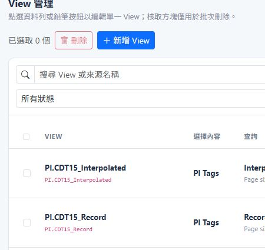
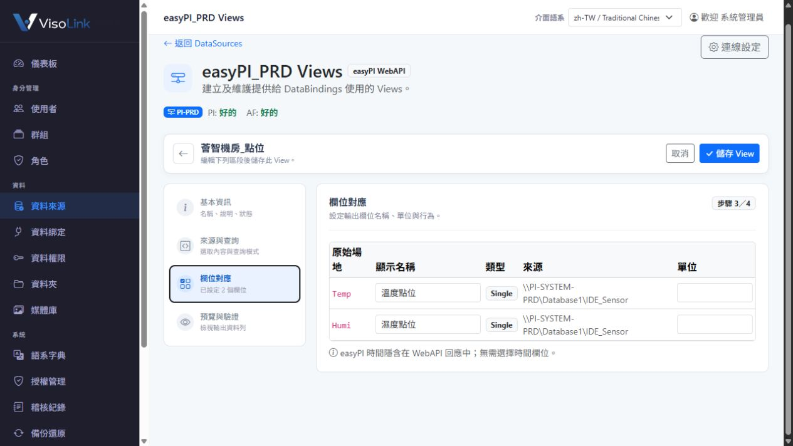

COURSE 05 · DATA ADMINISTRATION
DataSource
Management
從連線、View 到 Runtime，建立可理解、可驗證的資料供應流程。
資料／系統管理員建議 120 分鐘建議先完成 Course 00、01
LEARNING OUTCOMES
管理員提供的不是連線，而是可被安全使用的資料
01建立連接
依資料特性選擇類型並以最小權限設定連線。
02整理 View
選取必要內容，完成名稱、型別、單位與時間定義。
03驗證結果
從預覽、Studio 到 Runtime 完成端到端測試。
04管理變更
判斷異常類型並控制結構修改與停用影響。
ROLE BOUNDARY
資料管理員是來源系統與 Studio 設計者之間的翻譯者
⌁來源負責人
提供資料定義、連線條件、更新規則與使用限制。
→
⚙資料管理員
建立連線與 View，整理可使用欄位並驗證資料。
→
✦Studio 設計者
使用 DataBinding 建立 Display，不猜測來源技術細節。
Runtime 使用者回報的資料問題，應能沿著 Display → Binding → View → DataSource 找到責任範圍。
LIFECYCLE
DataSource 從需求到停用的完整生命週期
1盤點用途、責任與敏感度
2連接類型與安全設定
3測試可達、驗證與回應
4建構View 與欄位映射
5驗證預覽、Studio、Runtime
6維護變更、稽核與停用
完成定義：連線測試成功不等於工作完成；至少要有一個可預覽的 View，並由實際角色在 Runtime 驗證。
PRE-CHECK
建立 DataSource 前，先收齊八項資訊
資料擁有者
誰能確認定義？業務用途
要回答什麼問題？使用角色
誰需要讀取？資料範圍
需要哪些設備與欄位？更新頻率
多久產生一筆？時間定義
事件或入庫時間？敏感度
是否需要限制？影響與維護
中斷由誰處理？缺少擁有者或資料定義時，不應先建立正式 DataSource 再由使用者自行猜測。
CONNECTOR SELECTION
依資料特性與存取方式選擇連接類型
關聯式資料
適用資料表、查詢與結構化營運資訊。
時序資料
適用高頻量測、歷史序列與時間範圍查詢。
工業資料
適用設備 Tag、資產階層與製程系統資料。
服務介面
適用由標準 Web API 提供的外部系統資料。
不要只看資料庫品牌：還要確認查詢模式、時間行為、驗證方式、資料量與使用頻率。
SECURE CONNECTION
連線帳號只取得完成工作所需的最低能力
端點與網路
確認主機、連接埠、路徑與網路允許範圍；不要在教材或回報中公開不必要資訊。
專用身分
連線帳號不得與個人帳號混用，權限以讀取必要資料為原則。
憑證管理
密碼、Token 與憑證只交由授權人員維護，避免貼入截圖、郵件與紀錄。
名稱依環境與用途可辨識
說明資料責任與使用目的
Timeout避免請求無限等待
CONNECTION TEST
測試連線時，辨識失敗發生在哪一層
1網路可達能到達指定端點
2身分驗證帳號或憑證有效
3來源授權可讀必要資料範圍
4服務回應格式與版本可理解
5時間與資料能取得合理樣本
連不上
檢查端點、網路、服務狀態與 Timeout。
驗證失敗
檢查帳號、Token、憑證與來源端權限。
成功但無資料
檢查範圍、查詢條件、時間與資料本身。
VIEW
View 是來源資料與 DataBinding 之間的穩定介面
View 選取需要的內容、定義查詢方式，並將原始欄位整理成設計人員能理解的輸出。
- 只提供實際需要的資料範圍
- 名稱與說明使用現場或業務語言
- 穩定輸出欄位、型別與時間行為
- 來源結構改變時集中調整與驗證
VIEW MANAGEMENT
以名稱、來源、狀態與欄位數管理 Views

View 管理支援搜尋、狀態篩選、建立、編輯及受控刪除。- 名稱應表達設備、資料型態或用途
- 說明應記錄資料定義與責任人
- 停用 View 前確認 DataBinding 與 Display 依賴
- 批次刪除只用於已確認的範圍
- 更新時間可協助追蹤近期變更
FOUR STEPS
View 以四個區段完成建構
1基本資訊名稱、說明與啟用狀態
2來源與查詢選取內容及查詢模式
3欄位對應名稱、型別、來源與單位
4預覽與驗證時間範圍與輸出資料列
建立順序：先確認來源與查詢能產生正確資料，再整理欄位名稱與單位，最後以代表性時間範圍預覽。
SOURCE & QUERY
查詢模式必須符合資料用途
選取內容
只選擇必要的 Table、Tag、Attribute 或其他來源物件。
時間行為
確認點位、區間、內插、彙整或其他查詢模式的差異。
資料量控制
依使用情境設定合理範圍與輸出量，避免無限制查詢。
View 的查詢設定決定 DataBinding 能取得什麼；Display 的 TimeWindow 決定執行時要查哪一段時間。
FIELD MAPPING
讓原始欄位成為可理解、可持續使用的輸出

欄位映射集中管理原始欄位、顯示名稱、型別、來源及單位。- 原始欄位確認來源端真實識別。
- 顯示名稱轉成設計者與使用者理解的語言。
- 型別確認數值、文字、布林或時間。
- 單位使用正式定義，避免各 Display 自行猜測。
FIELD CONTRACT
欄位一旦被使用，就形成與下游的資料契約
名稱穩定
不要因顯示偏好隨意改名；修改前盤點所有引用。
型別正確
來源看似數字但實際是文字時，需明確轉換或保留原型別。
單位一致
若 View 轉換單位，名稱、說明及驗證資料必須同步。
時間明確
確認時間欄位、時區與事件時間／入庫時間意義。
高影響變更：刪除欄位、改名、改型別或改單位，可能讓現有 DataBinding、Variable、Calculation 與 Display 失效。
PREVIEW
預覽使用代表性時間範圍檢查實際輸出
 預覽時間只用於本次驗證，不會成為固定 View 查詢時間。
預覽時間只用於本次驗證，不會成為固定 View 查詢時間。- 選擇包含正常生產資料的時間範圍
- 確認欄位數與欄位名稱
- 抽查樣本值、空值與合理值域
- 確認時間排序、時區與資料密度
- 使用目前未儲存設定預覽時，注意結果與正式版本差異
END-TO-END VERIFICATION
管理後台成功，不代表使用者端一定成功
1連線測試DataSource 可用
2View 預覽欄位與資料正確
3DataBinding輸出與權限完成
4Studio能瀏覽與綁定
5Runtime實際角色可讀取
6時間情境即時與歷史都符合
交付標準設計人員知道名稱、Field、型別、單位與限制；監看人員能在正確時間情境取得資料。
TROUBLESHOOTING
先分類問題，再進入對應層級
連線端點不可達、Timeout 或服務停止。
驗證帳號、Token、憑證或來源授權失敗。
結構Table、Tag、Field 改名或消失。
查詢條件、模式、時間或資料量不合理。
權限管理員可見，但實際角色不可讀。
資料更新來源成功回應，但資料延遲或停止。
回報需包含 DataSource、View、時間範圍、實際角色、錯誤層級、訊息及已完成檢查。
CHANGE CONTROL
資料結構變更前，先盤點所有下游依賴
0102盤點影響
確認 View、DataBinding、Variable、Calculation、Display 與使用角色。
正式執行與複驗
從後台到 Runtime 完成驗證並留下紀錄。
停用前：確認沒有正式使用依賴、通知負責人、安排替代資料並保留必要稽核紀錄。
HANDS-ON ASSESSMENT
Course 05 實作任務
建立與整理
- 完成測試資料需求盤點表
- 建立測試 DataSource 並完成連線驗證
- 建立 View、選擇來源與查詢模式
- 完成名稱、型別、單位與時間欄位映射
驗證與維運
- 使用代表性時間範圍執行預覽
- 由 Studio 建立 DataBinding 與 Symbol
- 以實際角色在 Runtime 驗證
- 完成一份異常分類與變更影響紀錄
通過標準資料能從來源到 Runtime 正確呈現，欄位定義清楚，權限與時間行為符合預期，且變更具備可追溯與回復方式。
下一門：Admin & Governance →